说明： 本笔记为本人学习过程中随手写的笔记，为复习使用，笔记中可能存在遗漏或错误，具体请以官方文档和权威书籍为准！谢谢！ 笔记中的一些图片等元素因路径配置问题，可能会发生丢失。 笔记中展示的知识点仅为部分内容，完整内容请查阅官方开发文档内容！
RabbitMQ 是一个消息代理：它接收和转发消息。您可以将其视为邮局：当您将要邮寄的邮件放入邮箱时，您可以确信邮递员最终会将邮件投递给您的收件人。在这个类比中，RabbitMQ 是一个邮箱、一个邮局和一个邮递员。
RabbitMQ 和邮局之间的主要区别在于它不处理纸张，而是接受、存储和转发二进制数据块——消息。
RabbitMQ 和消息传递通常使用一些术语。
生产 仅仅意味着发送。发送消息的程序是生产者
队列 是 RabbitMQ 中邮箱的名称。尽管消息流经 RabbitMQ 和您的应用程序，但它们只能存储在队列内部。队列仅受主机内存和磁盘限制的约束，它本质上是一个大型消息缓冲区。
许多生产者 可以发送消息到一个队列，而许多消费者 可以尝试从一个队列接收数据。
这是我们表示队列的方式
消费 具有与接收类似的含义。消费者 是一个主要等待接收消息的程序
请注意，生产者、消费者和代理不必驻留在同一主机上；实际上，在大多数应用程序中它们都不是。一个应用程序也可以既是生产者又是消费者。
微服务一旦拆分，必然涉及到服务之间的相互调用，目前我们服务之间调用采用的都是基于OpenFeign的调用。这种调用中，调用者发起请求后需要等待服务提供者执行业务返回结果后，才能继续执行后面的业务。也就是说调用者在调用过程中处于阻塞状态，因此我们称这种调用方式为同步调用，也可以叫同步通讯。但在很多场景下，我们可能需要采用异步通讯的方式，为什么呢？
我们先来看看什么是同步通讯和异步通讯。如图：
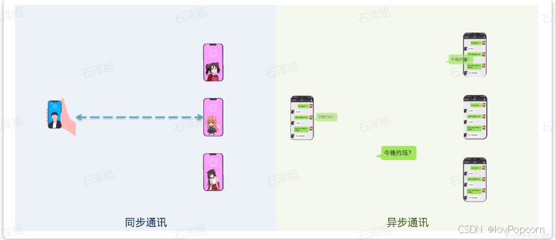
同步通讯：就如同打视频电话，双方的交互都是实时的。因此同一时刻你只能跟一个人打视频电话。
异步通讯：就如同发微信聊天，双方的交互不是实时的，你不需要立刻给对方回应。因此你可以多线操作，同时跟多人聊天。
两种方式各有优劣，打电话可以立即得到响应，但是你却不能跟多个人同时通话。发微信可以同时与多个人收发微信，但是往往响应会有延迟。
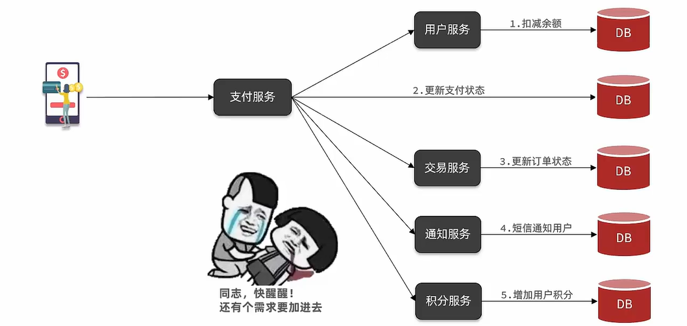
同步调用的优势
时效性强，需等待结果后才返回
同步调用的问题
业务耦合问题，业务拓展性差
性能问题
级联失败问题
异步调用方式就是基于消息通知的方式，一般分为三个角色
消息发送者：投递消息的人，原来的调用方
消息代理：管理，暂存，转发消息
消息接收者：接受和处理消息的人，服务提供方
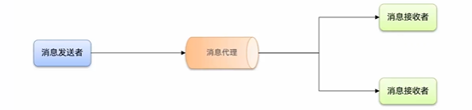
例如在支付服务中，不在同步调用业务关联度低的服务，而发送消息通知到Broker
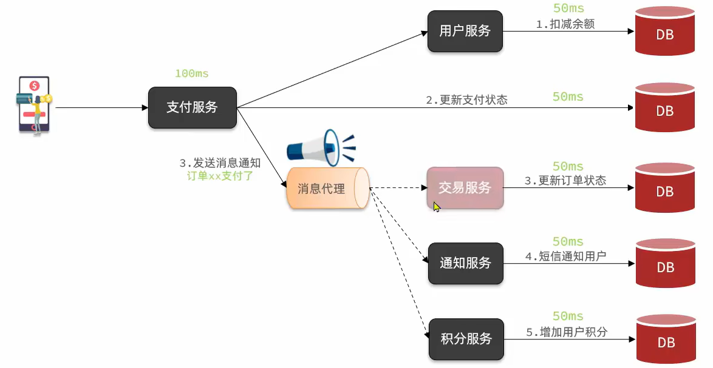
这种方式具有以下优势
解除耦合，拓展性强
无需等待，性能好
故障隔离，下游服务故障不会影响到上游服务
缓存消息，流量削峰填谷
异步调用的问题
不能立刻得到调用结果，时效性较差
不确定下游业务执行是否成功
业务安全依赖于Borker的可靠性
适用于异步调用的场景
对对方内容的调用结果的成功与失败不关心
对性能要求较高
MQ(MessageQueue)，消息队列，字面意思就是存放消息的队列，也就是异步调用中的Broker
| RabbitMQ | ActiveMQ | RecketMQ | Kafka | |
|---|---|---|---|---|
| 开发公司/社区 | Rabbit | Apache | 阿里 | Apache |
| 开发语言 | Erlang | java | java | Scala,java |
| 协议支持 | AMQP,XMPP,SMTP,STOMP | OpenWire,STOMP,REST,XMPP,AMQP | 自定义协议 | 自定义协议 |
| 可用性 | 高 | 一般 | 高 | 高 |
| 单机吞吐量 | 一般 | 差 | 高 | 非常高 |
| 消息延迟 | 微秒级 | 毫秒级 | 毫秒级 | 毫秒以内 |
| 消息可靠性 | 高 | 一般 | 高 | 一般 |
官网：RabbitMQ: One broker to queue them all | RabbitMQ
Installing on Debian and Ubuntu | RabbitMQ
安装Erlang环境
xxxxxxxxxxapt-get install erlang
安装Docker
xxxxxxxxxxapt install curl vim wget gnupg dpkg apt-transport-https lsb-release ca-certificatesapt install docker.io
拉取docker镜像
注意：拉取镜像前请先更改为国内加速镜像，否则会导致拉取失败
xxxxxxxxxxdocker pull rabbitmq:management
执行以下指令启动容器
xxxxxxxxxxdocker run -id --name=rabbitmq -v /usr/local/docker/rabbitmq:/var/lib/rabbitmq -p 15672:15672 -p 5672:5672 -e RABBITMQ_DEFAULT_USER=admin -e RABBITMQ_DEFAULT_PASS=admin rabbitmq:management
xxxxxxxxxx以上命令配置如下：-id：以交互模式启动容器并在后台运行。--name=rabbitmq：为容器指定一个名称。-v /usr/local/docker/rabbitmq:/var/lib/rabbitmq：将主机目录挂载到容器内的 /var/lib/rabbitmq，用于持久化数据。-p 15672:15672：映射 RabbitMQ 管理页面端口。-p 5672:5672：映射 RabbitMQ 消息接收端口。-e RABBITMQ_DEFAULT_USER=admin：设置默认用户名。-e RABBITMQ_DEFAULT_PASS=admin：设置默认密码。
测试访问
输入设置好的用户名和密码，进入后台
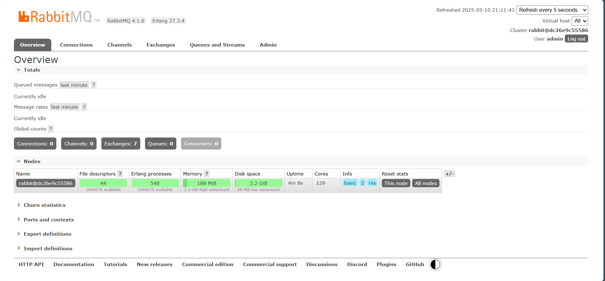
关机后再次启动
xxxxxxxxxxdocker start rabbitmq
RabbitMQ的整体架构及核心概念：
publisher：消息发送者
consumer：消息的消费者
queue：队列，存储消息
exchange：交换机，负责路由消息
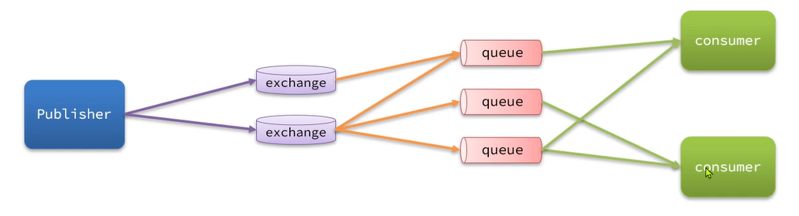
需求：在RabbitMQ的控制台下完成下列操作
新建队列hello.queue1和hello.queue2
向默认的amp.fanout交换机发送一条消息
查看消息是否抵达hello.queue1和hello.queue2
总结
新建两个队列
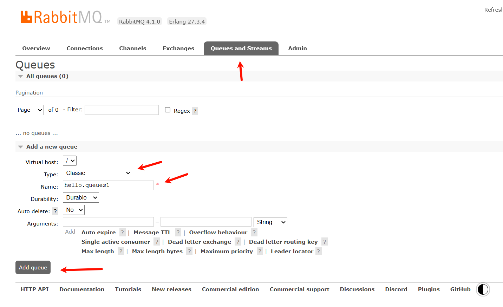
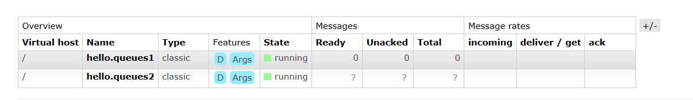
选一个交换机，配置交换机与队列的关系
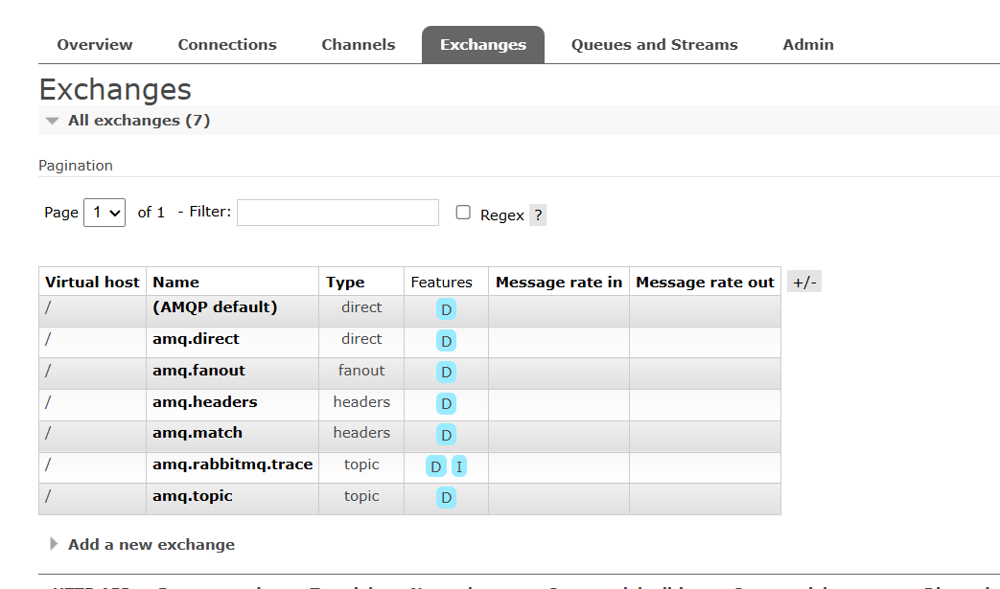
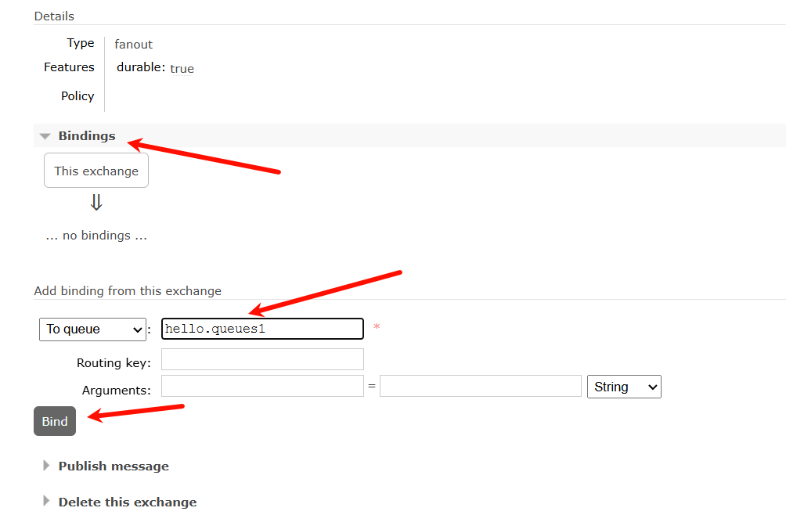
使用交换机发送一条消息
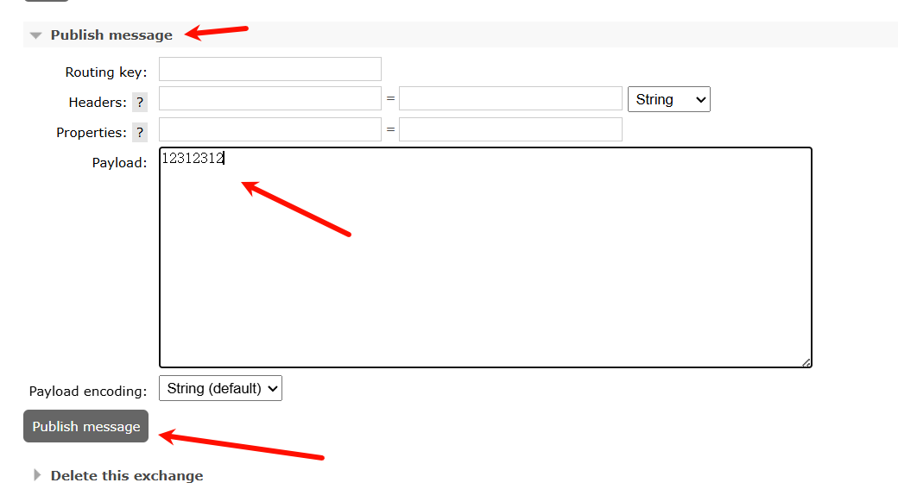
可以看到消息发送成功
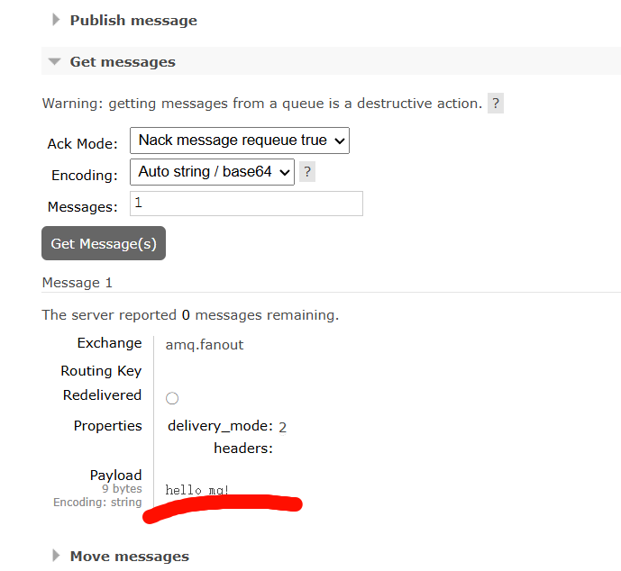
需求：在rabbitMQ控制台下完成以下操作
新建用户newuser
为newuser用户新建一个virtual host
测试不同的virtual host之间的数据隔离现象
新建用户
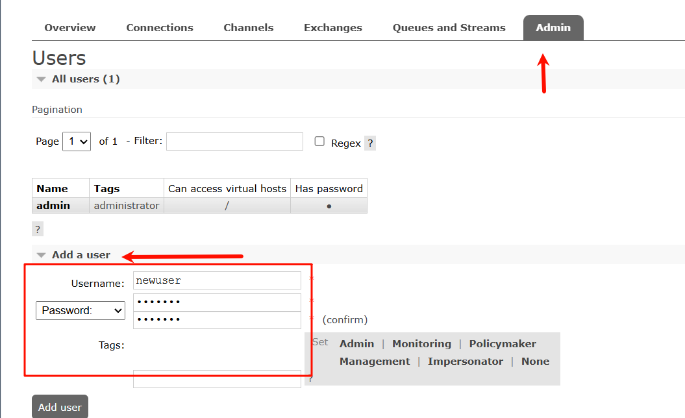
新建虚拟主机
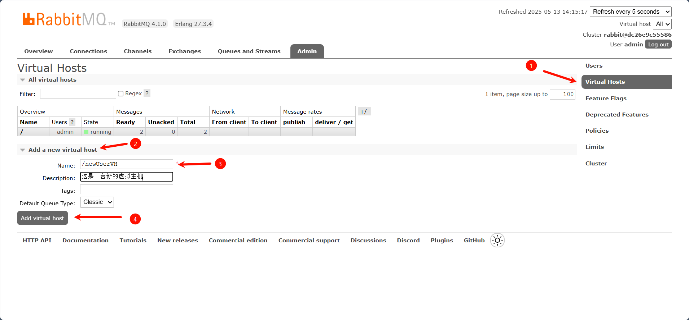
由于RabbitMq默认的API操作十分繁琐，在Java中，使用Spring AMQP中提供的API操作消息队列，更加方便快捷
关于Spring AMQP
Spring AMQP是一个基于AMQP协议的消息中间件框架，它提供了一个简单的API来发送和接收异步、可靠的消息。它是Spring框架的一部分，可以与Spring Boot和其他Spring项目一起使用。Spring AMQP支持多种消息协议，包括RabbitMQ、Apache ActiveMQ和Qpid等。它提供了一个高级的消息模型，包括消息确认、事务和消息监听器等功能，使得开发者可以轻松地编写可靠的消息应用程序。Spring AMQP还提供了一些高级特性，如消息转换器、消息路由、消息过滤和消息拦截等。这些特性可以帮助开发者更加灵活地处理不同类型的消息，同时也提高了应用程序的性能和可靠性。总之，Spring AMQP是一个强大的消息中间件框架，它可以帮助开发者轻松地构建可靠的消息应用程序，并提供了许多高级特性来满足不同的需求。
AMQP介绍
Advanced MessageQueuingProtocol，是用于在应用程序之间传递业务消息的开放标准。该协议与语言和平台无关，更符合微服务中独立性的要求。
需求
利用控制台创建队列simple.queue
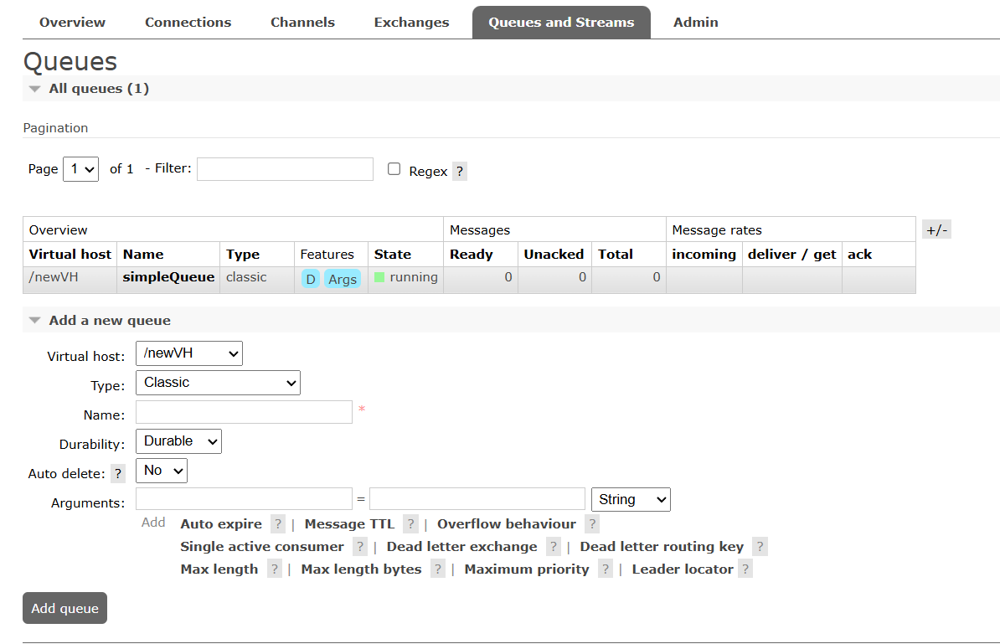
在publisher服务中，利用Spring AMQP向simple.queue发送消息
引入Spring AMQP依赖
xxxxxxxxxx<dependency><groupId>org.springframework.boot</groupId><artifactId>spring-boot-starter-amqp</artifactId></dependency>
在每个微服务引入MQ服务端信息
xxxxxxxxxxspring:application:name:consumerrabbitmq:host:192.168.242.132port:5672virtual-host:/newVHusername:newuserpassword:newuser
发送消息 SpringAMQP提供了RabbitTemplate工具类，方便我们发送消息。发送消息代码如下：
xxxxxxxxxxpackage cn.shuzilearn.publisher;import jakarta.annotation.Resource;import org.junit.jupiter.api.Test;import org.springframework.amqp.rabbit.core.RabbitTemplate;import org.springframework.boot.test.context.SpringBootTest;@SpringBootTestclass PublisherApplicationTests {@Resourceprivate RabbitTemplate rabbitTemplate;@Testvoid testPublisher() {// 定义消息队列String queueName = "simpleQueue";// 定义消息String msg = "hello world";for (int i = 0; i < 10; i++) {// 发送消息rabbitTemplate.convertAndSend(queueName, msg+i);}}}
在consumer服务中，利用Spring AMQP编写消费者，监听simple.queue队列消息
SpringAMQP提供声明式的消息监听，我们只需要通过注解在方法上声明要监听的队列名称，将来SpringAMQP就会把消息传递给当前方法：
xxxxxxxxxxpackage cn.shuzilearn.consumer.linteners;import org.springframework.amqp.rabbit.annotation.RabbitListener;import org.springframework.stereotype.Component;@Componentpublic class mqlistener1 {@RabbitListener(queues = "simpleQueue")public void listener1(String msg) {System.out.println("收到消息:"+msg);}}
Work queues，任务模型。让多个消费者绑定到一个队列，共同消费队列中的消息
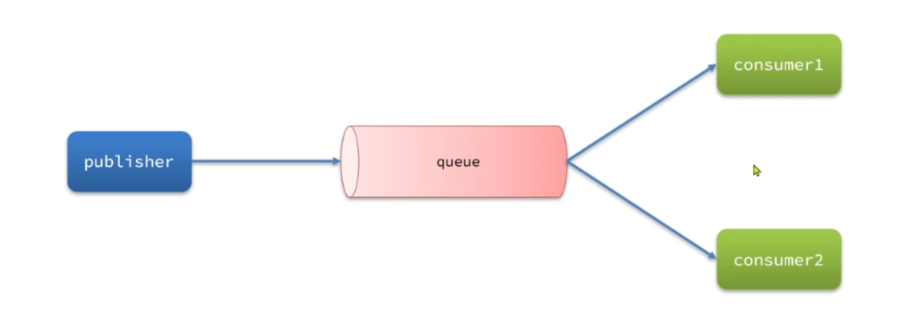
该模式下，在消息队列中一条消息只被消费一次
在默认情况下RabbitMQ会将消息依次轮询投递到队列上的每一个消费者，但这并没有考虑到消费者是否已经处理完消息，可能会出现消息堆积问题
可以在消费者的配置文件中添加以下配置，设置preFetch值为1，确保同一时刻最多投递一条消息给消费者：
xxxxxxxxxxspring.rabbitmq.listener.simple.prefetch=1
在真实的生产环境下，都是通过exchange来发送消息的，而不是直接发送到队列
交换机的种类分为以下三种
Fanout交换机：广播
Direct交换机：定向
Topic交换机：话题
FanoutExchange会将接收到的消息广播到每一个跟其绑定的queue，所以也叫广播模式
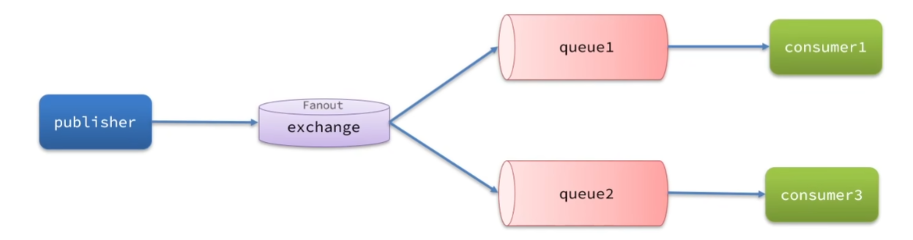
案例实现：利用SpringAMQP演示FanoutExchange的使用
在RabbitMQ控制台中，新建两个队列
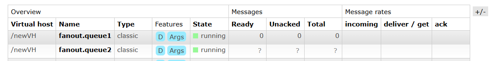
在RabbitMQ控制台中，新建一个Fanout交换机
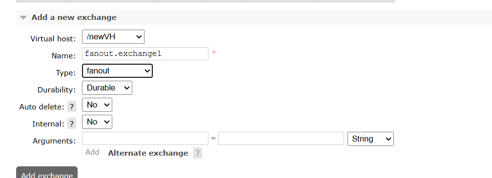
将两个队列与交换机进行绑定
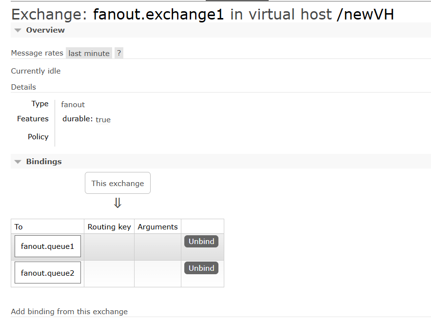
在consumer服务中编写两个消费者方法
xxxxxxxxxx(queues = "fanout.queue1")public void fanout_listener1(String msg) throws InterruptedException { System.out.println("1号消费者接收到了消息:"+msg);}
(queues = "fanout.queue2")public void fanout_listener2(String msg) throws InterruptedException { System.out.println("2号消费者接收到了消息:"+msg);
}
在publisher中编写测试方法，向交换机发送消息
xxxxxxxxxx@Testvoid testFanoutTemplate() {String ExchangeName = "fanout.exchange1";rabbitTemplate.convertAndSend(ExchangeName, null, "hello");}
效果展示
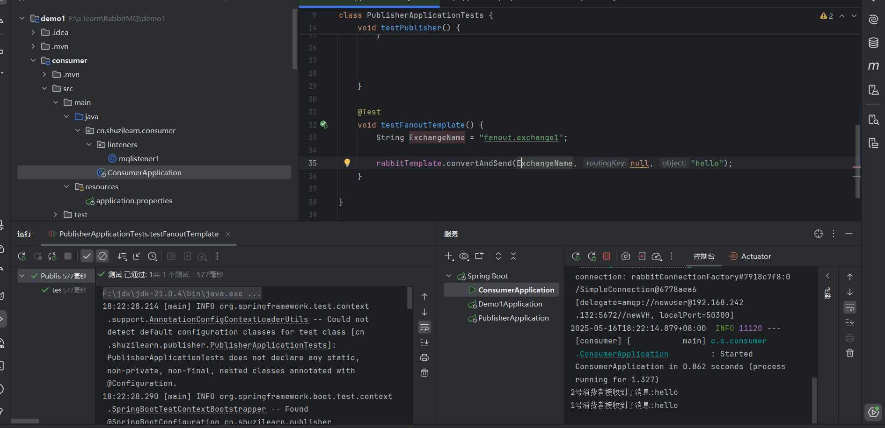
DirectExchange会将接收到的消息根据规则路由到指定的Queue，因此称为定向路由。
每一个Queue都与Exchange设置一个BindingKey
发布者发送消息时，指定消息的RoutingKey
Exchange将消息路由到BindingKey与消息RoutingKey一致的队列
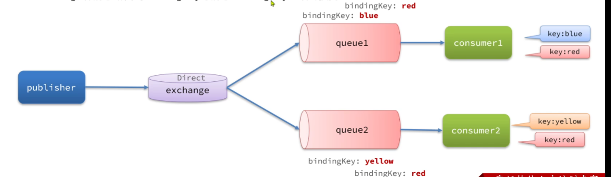
案例实现：利用SpringAMQP演示DirectExchange的使用
在RabbitMQ控制台中，声明队列direct.queue1和direct.queue2
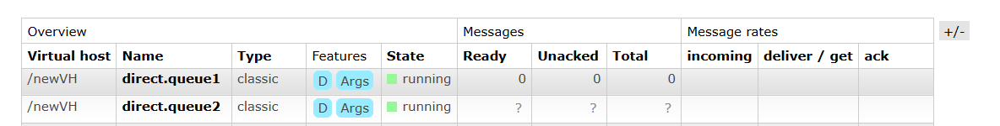
在RabbitMQ控制台中，声明交换机direct.exchange，将两个队列与其绑定，设置好key
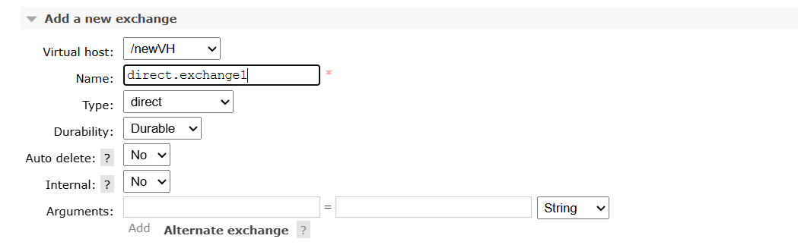
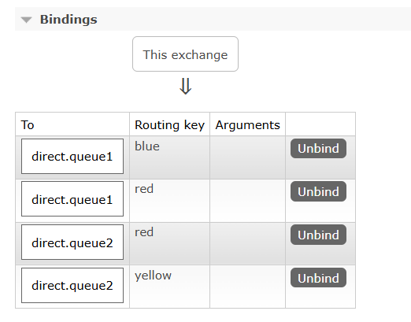
在consumer服务中，编写两个消费者方法，分别监听direct.queue1和direct.queue2
xxxxxxxxxx(queues = "direct.queue1")public void direct_listener1(String msg) throws InterruptedException { System.out.println("【队列一：红色/蓝色接收到了：】"+msg);}
(queues = "direct.queue2")public void direct_listener2(String msg) throws InterruptedException { System.out.println("【队列一：红色/黄色接收到了：】"+msg);}在publisher中编写测试方法，利用不同的RoutingKey向direct.exchange发送消息
xxxxxxxxxxvoid testDirecteTemplate() { String ExchangeName = "direct.exchange1"; // 发送红色消息 rabbitTemplate.convertAndSend(ExchangeName, "red", "这是红色"); // 发送蓝色消息 rabbitTemplate.convertAndSend(ExchangeName, "blue", "这是蓝色");
//发送黄色消息 rabbitTemplate.convertAndSend(ExchangeName, "yellow", "这是黄色");}
测试结果
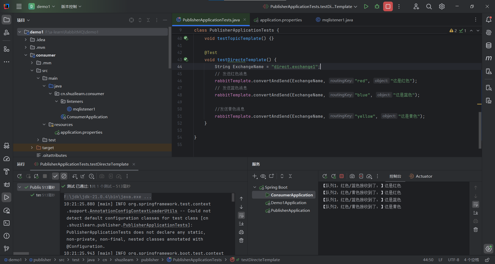
TopicExchange与DirectExchange类似，区别在于routingKey可以是多个单词的列表，并且以.分割。
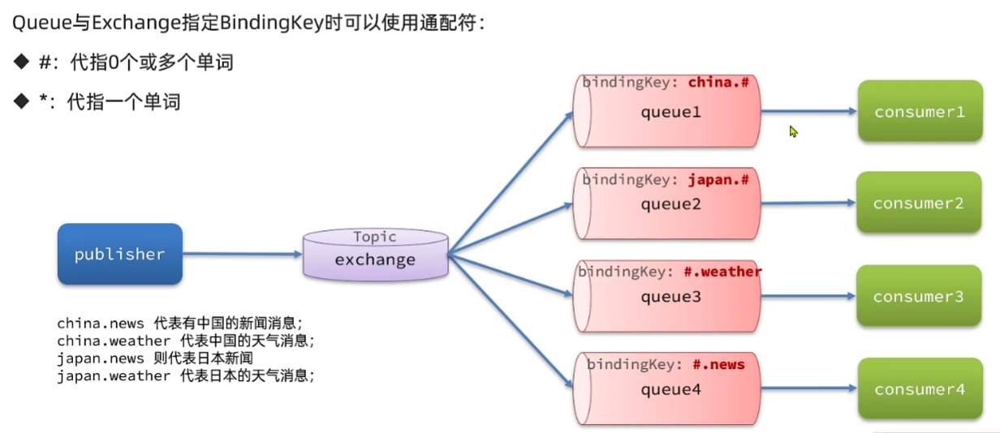
案例实现：利用Spring AMQP演示DirectExchange的使用
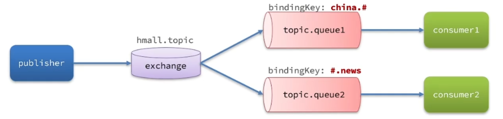
需求如下：
在RabbitMQ控制台中，声明队列topic.queue1和topic.queue2
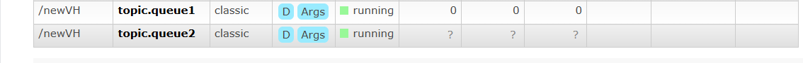
在RabbitMQ控制台中，声明交换机hmall.topic，将两个队列与其绑定
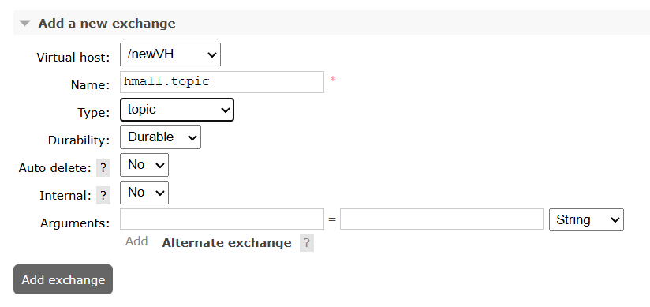
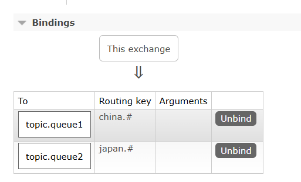
在consumer服务中，编写两个消费者方法，分别监听topic.queue1和topic.queue2
xxxxxxxxxx(queues = "topic.queue1")public void topic_listener1(String msg) throws InterruptedException { System.out.println("【队列1：china：】"+msg);}
(queues = "topic.queue1")public void topic_listener2(String msg) throws InterruptedException { System.out.println("【队列2：japan：】"+msg);}
在publisher中编写测试方法，利用不同的RoutingKey向hmall.topic发送消息
xxxxxxxxxxvoid testTopicTemplate() throws InterruptedException { String ExchangeName = "hmall.topic"; for (int i = 0; i < 50; i++) { if (i%2==1){ rabbitTemplate.convertAndSend(ExchangeName, "china.weather", "今天天气晴天"+i);
} else { rabbitTemplate.convertAndSend(ExchangeName, "japan.news", "正在排放核废水"+i);
} Thread.sleep(1000);
}
}效果展示
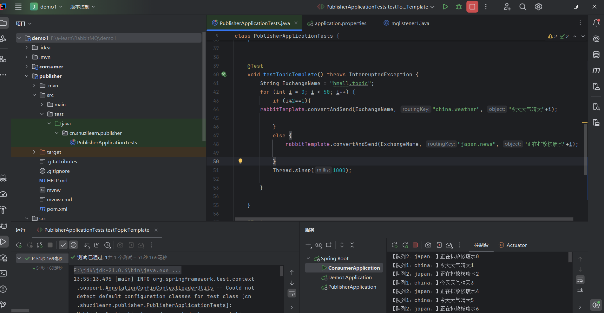
在真实的生产环境和开发环境中，一个项目可能需要很多个交换机，如果这些交换机全部通过上述后台管理界面进行创建，会非常繁琐复杂，在切换环境时，还可能会出错，导致项目出现问题。
在日常开发中，使用更多的时在项目Java代码的配置中进行声明，创建交换机，队列等
SpringAMQP提供了几个类，用来声明队列、交换机及其绑定关系：
Queue：用于声明队列，可以用工厂类QueueBuilder构建
Exchange：用于声明交换机，可以用工厂类ExchangeBuilder构建
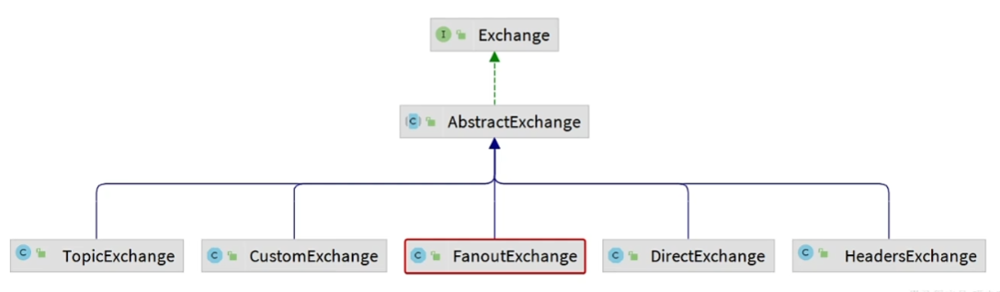
Binding：用于声明队列和交换机的绑定关系，可以用工厂类BindingBuilder构建
声明交换机一般在消费者端进行声明
基于Bean声明
xxxxxxxxxxpackage cn.shuzilearn.consumer.config;import org.springframework.amqp.core.*;import org.springframework.context.annotation.Bean;import org.springframework.context.annotation.Configuration;@Configurationpublic class FanoutConfigration {//声明交换机@Beanpublic FanoutExchange fanoutExchange() {return new FanoutExchange("fanoutExchange");// return ExchangeBuilder.fanoutExchange("fanoutExchange").build();}// 声明队列@Beanpublic Queue queue() {return new Queue("java.queue");}// 建立绑定关系// 方式1@Beanpublic Binding binding() {return BindingBuilder.bind(queue()).to(fanoutExchange());}// 方式2@Beanpublic Binding binding2(Queue queue, FanoutExchange fanoutExchange) {return BindingBuilder.bind(queue).to(fanoutExchange);}}
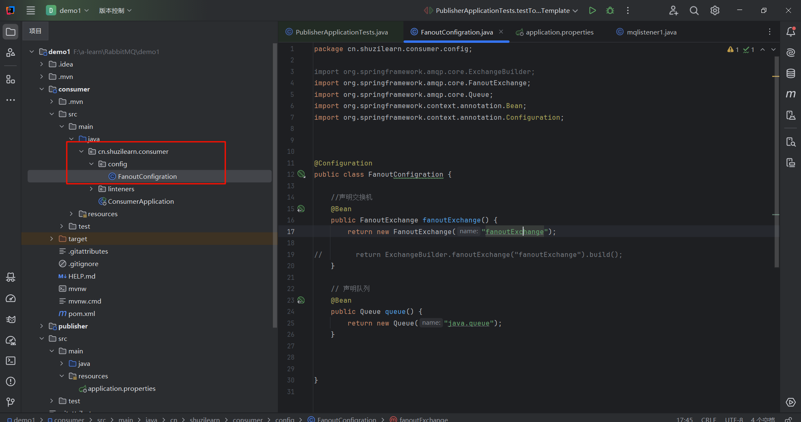
但是这种方法对于TopicExchange和DirectExchange这类需要绑定KEY的交换机就非常不友好，每次绑定一个Key都需要重新声明一个Bean(一个bean一次只能绑定一个key)，如果绑定的key非常多，就需要声明很多key，使得业务代码非常冗余复杂，重复。
基于注解声明
SpringAMQP还提供了基于@RabbitListener注解来声明队列和交换机的方式：
xxxxxxxxxx(bindings = ( value = (name = "java.q1"), exchange = (name = "java.zhujie.direct1",type = ExchangeTypes.DIRECT), key = {"a1","a2"}))public void listener3(String msg) throws InterruptedException { System.out.println("【java.q1[a1,a2]】"+msg);}
(bindings = ( value = (name = "java.q2"), exchange = (name = "java.zhujie.direct1",type = ExchangeTypes.DIRECT), key = {"a1","a3"}))public void listener4(String msg) throws InterruptedException { System.out.println("【java.q2[a1,a3]】"+msg);}xxxxxxxxxx// 测试Java代码声明void testForJava() throws InterruptedException { String ExchangeName = "java.zhujie.direct1"; // 发送红色消息 rabbitTemplate.convertAndSend(ExchangeName, "a1", "这是a1"); Thread.sleep(4000);
// 发送蓝色消息 rabbitTemplate.convertAndSend(ExchangeName, "a2", "这是a2"); Thread.sleep(4000);
//发送黄色消息 rabbitTemplate.convertAndSend(ExchangeName, "a3", "这是a3"); Thread.sleep(4000);
}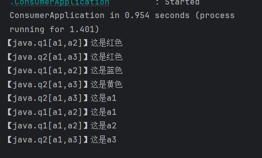
xxxxxxxxxxvoid testRabbitObject() throws InterruptedException { String QueueName = "object.queue";
Map<String, Object> map = new HashMap<>(); map.put("name","张三"); map.put("age",18); rabbitTemplate.convertAndSend(QueueName, map);
}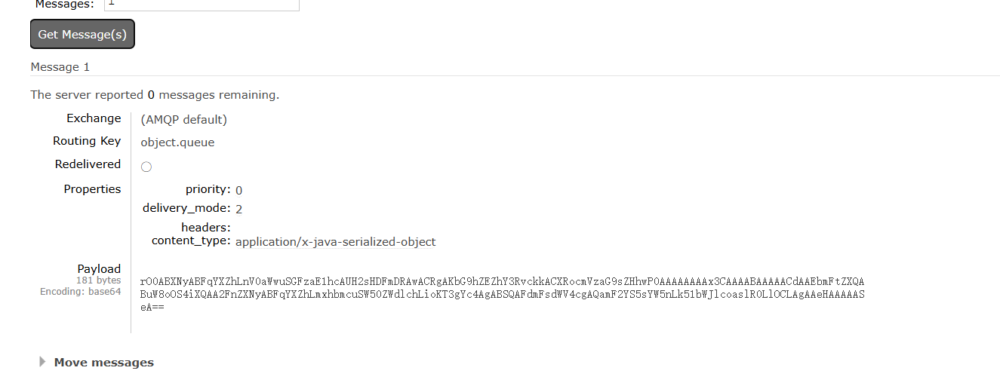
xxxxxxxxxxMap<String, Object> map = new HashMap<>();map.put("name","张三");map.put("age",18);
在这段消息数据中，通过默认的消息转换器转换后，消息大小为181 bytes，消息体积变大了很多。
Spring的对消息对象的处理是由org.springframework.amqp.support.converter.MessageConverter来处理的。而默认实现是SimpleMessageConverter，基于JDk的ObjectOutputStream完成序列化。 存在下列问题：
JDK的序列化有安全风险
JDK序列化的消息太大
JDK序列化的消息可读性差
建议采用JSON序列化代替默认的JDK序列化，要做两件事情：
在publisher和consumer中都要引l入jackson依赖：
xxxxxxxxxx<!-- https://mvnrepository.com/artifact/com.fasterxml.jackson.core/jackson-core --><dependency><groupId>com.fasterxml.jackson.core</groupId><artifactId>jackson-core</artifactId><version>2.18.3</version></dependency>
在publisher和consumer中都要配置MessageConverter：
xxxxxxxxxx public MessageConverter messageConverter() { Jackson2JsonMessageConverter converter = new Jackson2JsonMessageConverter(); converter.setCreateMessageIds(true); return converter; }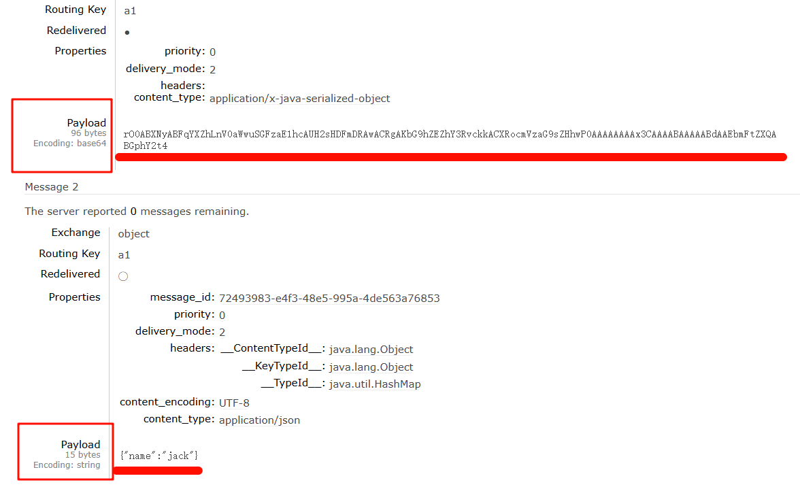
对比两次消息可以看出，通过消息转换器转换的消息体积明显变小了
有的时候由于网络波动，可能会出现客户端连接MQ失败的情况。通过配置我们可以开启连接失败后的重连机制：
xxxxxxxxxxspring:application:name: publisherrabbitmq:host: 192.168.242.132port: 5672virtual-host: /newVHusername: aaaapassword: aaaa# 连接超时时间connection-timeout: 1stemplate:retry:enabled: true # 开启超时重试机制initial-interval: 1000ms # 失败后的初始等待时间multiplier: 1 # 失败后下次等待时长的倍数max-attempts: # 最大重试次数
注意：
当网络不稳定的时候，利用重试机制可以有效提高消息发送的成功率。不过SpringAMQP提供的重试机制是阻塞式的重试，也就是说多次重试等待的过程中，当前线程是被阻塞的，会影响业务性能。 如果对于业务性能有要求，建议禁用重试机制。如果一定要使用，请合理配置等待时长和重试次数，当然也可以考虑使用异步线程来执行发送消息的代码。
RabbitMQ 提供了PublisherConfirm和PublisherReturn两种确认机制。开启确机制认后，在MQ成功收到消息后会返回确认消息给生产者。返回的结果有以下几种情况：
消息投递到了MQ，但是路由失败。此时会通过PublisherReturn返回路由异常原因，然后返回ACK，告知投递成功
临时消息投递到了MQ，并且入队成功，返回ACK，告知投递成功
持久消息投递到了MQ，并且入队完成持久化，返回ACK，告知投递成功
其它情况都会返回NACK，，告知投递失败
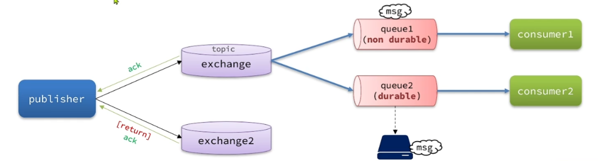
生产者确认代码实现
在publisher微服务中的application.yml中添加以下配置
xxxxxxxxxxspring:rabbitmq:publisher-confirm-type: correlated # 开启publisher-confirm机制并将类型设置为correlatedpublisher-returns: true # 开启publisher-return机制
配置说明： publisher-confirm-type有三种模式可选：
none：关闭confirm机制
simple：同步阻塞等待MQ的回执消息
correlated：MQ异步回调方式返回回执消息
每个RabbitTemplate只能配置一个ReturnCallback，因此需要在项目启动过程中配置：
xxxxxxxxxxpackage cn.shuzilearn.publisher.config;
import org.slf4j.Logger;import org.slf4j.LoggerFactory;import org.springframework.amqp.rabbit.connection.CorrelationData;import org.springframework.amqp.rabbit.core.RabbitTemplate;import org.springframework.beans.BeansException;import org.springframework.context.ApplicationContext;import org.springframework.context.ApplicationContextAware;import org.springframework.context.annotation.Configuration;
public class CommonConfig implements ApplicationContextAware { private static final Logger log = LoggerFactory.getLogger(CommonConfig.class);
public void setApplicationContext(ApplicationContext applicationContext) throws BeansException { RabbitTemplate rabbitTemplate = applicationContext.getBean(RabbitTemplate.class);
// 设置消息确认回调 rabbitTemplate.setConfirmCallback((correlationData, ack, cause) -> { if (correlationData == null) { log.error("消息确认回调中correlationData为空"); return; }
if (ack) { log.info("消息发送成功, ID: {}", correlationData.getId()); // 这里可以添加成功后的业务逻辑 } else { log.error("消息发送失败, ID: {}, 原因: {}", correlationData.getId(), cause); // 这里可以添加失败处理逻辑，如重试等 } });
// 设置消息返回回调（当消息无法路由到队列时触发） rabbitTemplate.setReturnsCallback(returned -> { log.error("消息未路由到队列, 消息: {}, 回应码: {}, 回应信息: {}, 交换机: {}, 路由键: {}", returned.getMessage(), returned.getReplyCode(), returned.getReplyText(), returned.getExchange(), returned.getRoutingKey()); // 这里可以添加路由失败的处理逻辑 }); }}测试发送消息
xxxxxxxxxx// 测试Java代码声明void testForJava() throws InterruptedException { CorrelationData correlationData = new CorrelationData(UUID.randomUUID().toString()); correlationData.getFuture().whenComplete((result, ex) -> { if (ex == null) { // 成功逻辑 System.out.println("消息发送成功，关联ID: " + correlationData.getId()); if (result != null && result.isAck()) { System.out.println("消息已被broker确认接收"); } else { System.out.println("消息被broker拒绝"); } } else { // 失败逻辑 System.err.println("消息发送失败，关联ID: " + correlationData.getId()); ex.printStackTrace(); // 这里可以添加重试或其他错误处理逻辑 } });
String ExchangeName = "java.zhujie.direct1"; // 发送红色消息 rabbitTemplate.convertAndSend(ExchangeName, "a1", "这是a1",correlationData);
}
如何处理生产者的确认消息？
生产者确认需要额外的网络和系统资源开销，尽量不要使用
如果一定要使用，无需开启Publisher-Return机制，因为一般路由失败是自己业务问题
对于nack消息可以有限次数重试，依然失败则记录异常消息
在默认情况下，RabbitMQ会将接收到的信息保存在内存中以降低消息收发的延迟。这样会导致两个问题：
一旦MQ岩机，内存中的消息会丢失
内存空间有限，当消费者故障或处理过慢时，会导致消息积压，引发MQ阻塞
RabbitMQ实现数据持久化包括3个方面：
交换机持久化（默认）
队列持久化（默认）
消息持久化
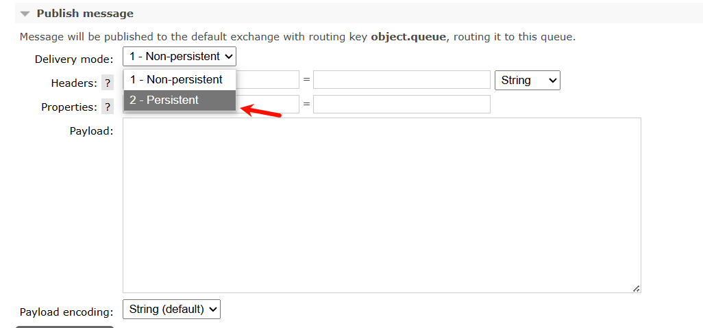
发送消息时Delivery mode使用2
未开启持久化：
xxxxxxxxxx// 数据持久化测试void testDataIN(){ Message massage = MessageBuilder.withBody("张三".getBytes(StandardCharsets.UTF_8)).setDeliveryMode(MessageDeliveryMode.NON_PERSISTENT).build(); for (int i = 0;i<99999999;i++){ rabbitTemplate.convertAndSend("object.queue",massage);
}}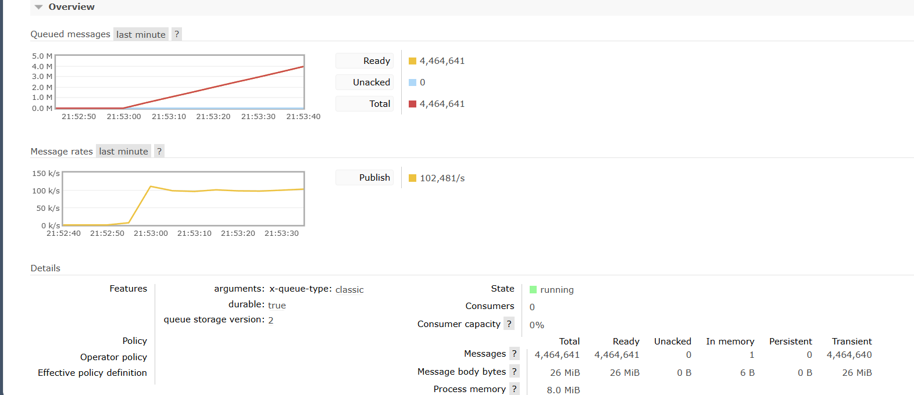
内存满后，出现阻塞
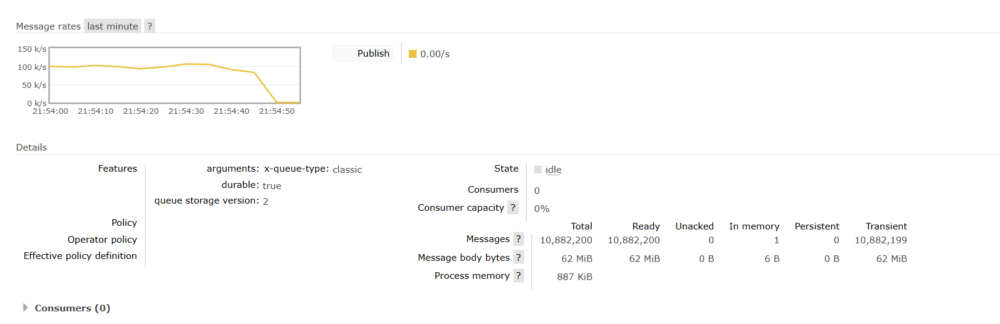
开启数据持久化
xxxxxxxxxx// 数据持久化测试void testDataIN(){ Message massage = MessageBuilder.withBody("张三".getBytes(StandardCharsets.UTF_8)).setDeliveryMode(MessageDeliveryMode.PERSISTENT).build(); for (int i = 0;i<99999999;i++){ rabbitTemplate.convertAndSend("object.queue",massage);
}}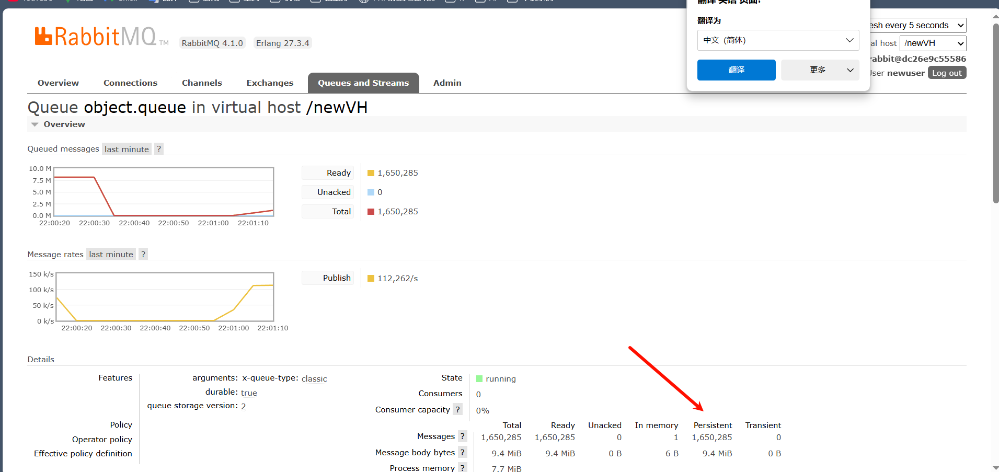
数据持久化虽然保证了数据的安全性问题，但同时我们也发现，这种方法的性能比较一般。
从RabbitMQ的3.6.0版本开始，就增加了LazyQueue的概念，也就是惰性队列。
惰性队列的特征如下：
接收到消息后直接存入磁盘而非内存（内存中只保留最近的消息，默认2048条）
消费者要消费消息时才会从磁盘中读取并加载到内存
支持数百万条的消息存储
在3.12版本后，所有队列都是LazyQueue模式，无法更改。
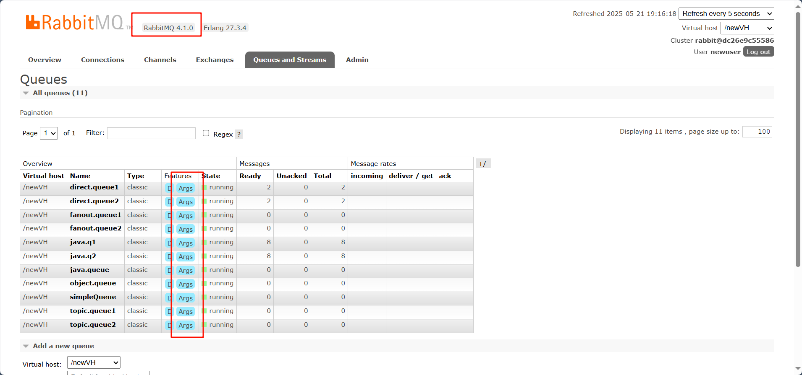
消息堆积问题的解决方案？
队列上绑定多个消费者，提高消费速度
使用惰性队列，可以在mq中保存更多消息
惰性队列的优点有哪些？
基于磁盘存储，消息上限高
没有间歇性的page-out，性能比较稳定
惰性队列的缺点有哪些？
基于磁盘存储，消息时效性会降低
性能受限于磁盘的IO
为了确认消费者是否成功处理消息，RabbitMQ提供了消费者确认机制（ConsumerAcknowledgement）。当消费者处理消息结束后，应该向RabbitMQ发送一个回执，告知RabbitMQ自己消息处理状态。回执有三种可选值：
ack：成功处理消息，RabbitMQ从队列中删除该消息
nack：消息处理失败，RabbitMQ需要再次投递消息
reject：消息处理失败并拒绝该消息，RabbitMQ从队列中删除该消息
SpringAMQP已经实现了消息确认功能。并允许我们通过配置文件选择ACK处理方式，有三种方式：
none：不处理。即消息投递给消费者后立刻ack，消息会立刻从MQ删除。非常不安全，不建议使用
manual：手动模式。需要自己在业务代码中调用api，发送ack或reject，存在业务入侵，但更灵活
auto：自动模式。SpringAMQP利用AOP对我们的消息处理逻辑做了环绕增强，当业务正常执行时则自动返回ack.当业务出现异常时，根据异常判断返回不同结果：
如果是业务异常，会自动返回nack
如果是消息处理或校验异常，自动返回reject
配置方法
在消费者的配置文件中添加以下配置项
xxxxxxxxxxspring:rabbitmq:listener:simple:prefetch: 1acknowledge-mode: auto # auto-自动 none-无 manual-手动
当消费者出现异常后，消息会不断requeue（重新入队）到队列，再重新发送给消费者，然后再次异常，再次requeue无限循环，导致mq的消息处理升，带来不必要的压力。
我们可以利用Spring的retry机制，在消费者出现异常时利用本地重试，而不是无限制的requeue到mq队列：
在消费者服务中添加以下配置
xxxxxxxxxxspring:rabbitmq:listener:simple:retry:enabled: true #开启消费者失败重试模式initial-interval: 1000 # 初始失败的等待时长multiplier: 1 # 下次重试的等待时长倍数max-attempts: 3 # 最大重试次数stateless: true # true:无状态 false:有状态 如果业务中包含事务，改为false
在开启重试模式后，重试次数耗尽，如果消息依然失败，则需要有MessageRecoverer接口来处理，它包含三种不同的实现：
RejectAndDontRequeueRecoverer：重试耗尽后，直接reject，丢弃消息。默认就是这种方式
ImmediateRequeueMessageRecoverer：重试耗尽后，返回nack，消息重新入队
RepublishMessageRecoverer：重试耗尽后，将失败消息投递到指定的交换机
在一般情况下，我们会使用RepublishMessageRecoverer策略
操作步骤：
首先，定义接收失败消息的交换机、队列及其绑定关系
然后，定义RepublishMessageRecoverer
xxxxxxxxxxpackage cn.shuzilearn.consumer.config;
import org.springframework.amqp.core.*;import org.springframework.amqp.rabbit.core.RabbitTemplate;import org.springframework.amqp.rabbit.retry.MessageRecoverer;import org.springframework.amqp.rabbit.retry.RepublishMessageRecoverer;import org.springframework.context.annotation.Bean;import org.springframework.context.annotation.Configuration;
public class errorConfigration { public DirectExchange errorExchange(){ return new DirectExchange("error"); }
public Queue errorQueue(){ return new Queue("error"); }
public Binding errorBinding(DirectExchange errorExchange, Queue errorQueue){ return BindingBuilder.bind(errorQueue).to(errorExchange).with("error"); }
public MessageRecoverer messageRecoverer(RabbitTemplate rabbitTemplate) { return new RepublishMessageRecoverer(rabbitTemplate,"error","error") ; }
}
幂等是一个数学概念，用函数表达式来描述是这样的：f(x)=f(f(x)）。在程序开发中，则是指同一个业务，执行一次或多次对业务状态的影响是一致的。
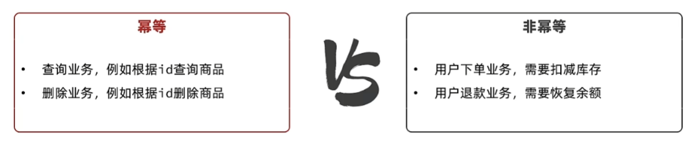
方案一：唯一消息ID
给每个消息都设置一个唯一id，利用id区分是否是重复消息：
每一条消息都生成一个唯一的id，与消息一起投递给消费者。
消费者接收到消息后处理自己的业务，业务处理成功后将消息ID保存到数据库
如果下次又收到相同消息，去数据库查询判断是否存在，存在则为重复消息放弃处理。
xxxxxxxxxxpublic MessageConverter messageConverter() { // 1.定义消息转换器 Jackson2JsonMessageConverter converter = new Jackson2JsonMessageConverter(); // 2.配置自动创建消息id，用于识别不同消息，也可以在业务中基于工D判断是否是重复消息 converter.setCreateMessageIds(true); return converter;}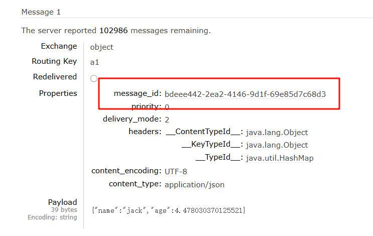
问题：这种方法需要改造业务代码。例如：在业务代码的基础上，需要增加读写ID记录数据库代码，性能会有所降低。
方案二：结合业务逻辑，基于业务本身做判断
但是，该方法并不具备通用性，需要根据实际情况进行选择。
例如：我们要在支付后修改订单状态为已支付，应该在修改订单状态前先查询订单状态，判断状态是否是未支付。只有未支付订单才需要修改，其它状态不做处理：
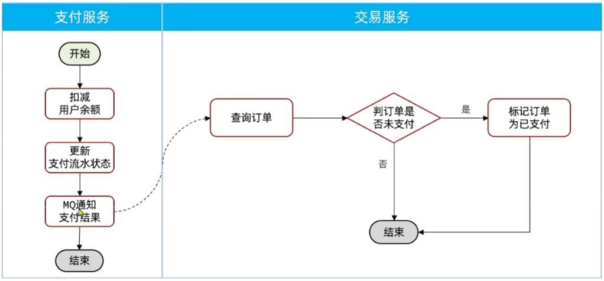
生产者发送消息时指定一个时间，消费者不会立刻收到消息，而是在指定时间之后才收到消息。
当一个队列中的消息满足下列情况之一时，就会成为死信（deadletter）：
消费者使用basic.reject或basic.nack声明消费失败，并且消息的requeue参数设置为false
消息是一个过期消息（达到了队列或消息本身设置的过期时间），超时无人消费
要投递的队列消息堆积满了，最早的消息可能成为死信
如果队列通过dead-letter-exchange属性指定了一个交换机，那么该队列中的死信就会投递到这个交换机中。这个交换机称为死信交换机（DeadLetterExchange，简称DLx）。
案例实现：
使用死信交换机完成延迟消息效果
按照下图的展示创建和绑定交换机和队列
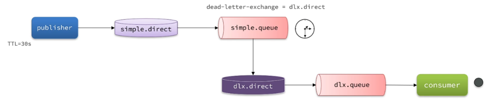
创建消费者，监听死信队列
xxxxxxxxxx(queues = "dlx.queue")public void listener4(Map<String, Object> msg1) throws InterruptedException { System.out.println("死信交换机收到消息："+msg1);}
创建生产者，发送消息，设置消息过期时间
xxxxxxxxxxvoid testDLXqueue() throws InterruptedException { // 构造消息内容 Map<String, Object> msg = new HashMap<>(); msg.put("name", "jack");
// 发送带 TTL 的消息 rabbitTemplate.convertAndSend("simple.exchange", "hello", msg, message -> { message.getMessageProperties().setExpiration("1000"); // 1秒过期 return message; });
System.out.println("消息已发送，等待过期进入 DLX...");
}
效果展示
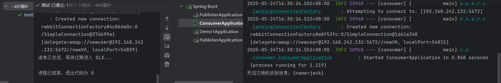
RabbitMQ的官方也推出了一个插件，原生支持延迟消息功能。该插件的原理是设计了一种支持延迟消息功能的交换机，当消息投递到交换机后可以暂存一定时间，到期后再投递到队列。
插件下载：Releases · rabbitmq/rabbitmq-delayed-message-exchange
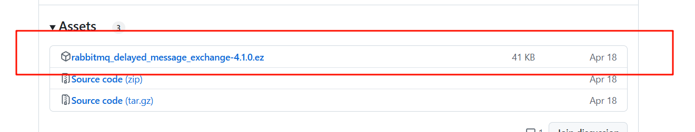
将插件上传到服务器，并导入到容器的插件目录
xxxxxxxxxxdocker cp /home/huang/rabbitmq_delayed_message_exchange-4.1.0.ez rabbitmq:/plugins/
进入容器
xxxxxxxxxxdocker exec -it rabbitmq bash
启用插件
xxxxxxxxxxrabbitmq-plugins enable rabbitmq_delayed_message_exchange
启动成功
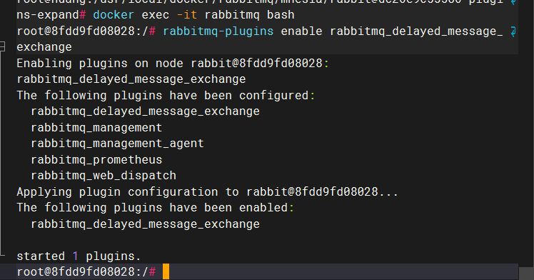
使用方法：
声明交换机时添加delayed="true"
注解方法
xxxxxxxxxx(bindings = ( value = (name ="delay.queue"), exchange = (name = "delay.exchange",delayed = "true"), key = "delay"
))public void listener5(Map<String, Object> msg1) throws InterruptedException { log.info("收到了消息"+msg1);
}
@Bean方法
xxxxxxxxxxpublic DirectExchange delayExchange() { return ExchangeBuilder .directExchange("delayExchange") .delayed() .build();}
发送延迟消息测试
xxxxxxxxxxvoid TestDelayQueue() throws InterruptedException { Map<String, Object> msg = new HashMap<>(); msg.put("name", "jack");
rabbitTemplate.convertAndSend("delay.exchange", "delay", msg,new MessagePostProcessor() {
public Message postProcessMessage(Message message) throws AmqpException { message.getMessageProperties().setDelayLong(10000L); return message; } });}效果展示，10秒后死信队列显示输出